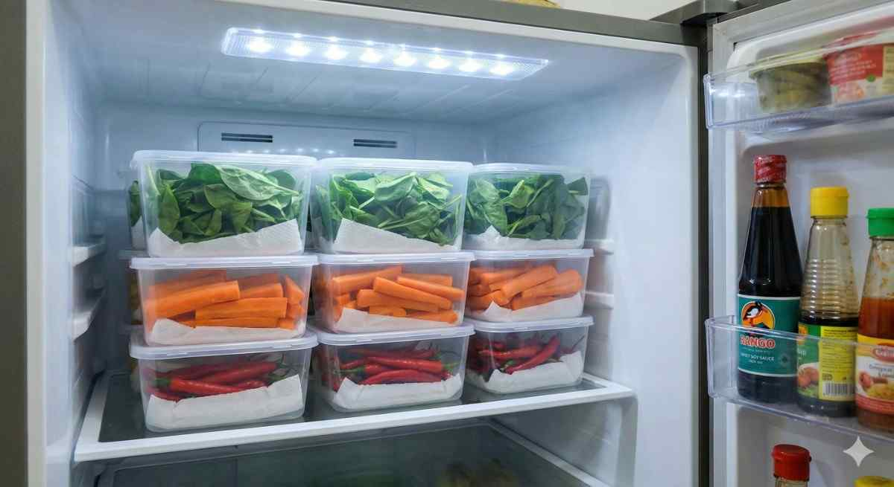

22 Jan 2026
Bisnis Sayur Organik, Peluang Cuan yang Sayang Dilewatkan
Pernah nggak sih kamu merasa kalau belakangan ini orang-orang di sekitar kita jadi lebih "rewel" soal makanan? Sedikit-sedikit cek label kemasan, atau tanya, "Ini pakai pestisida nggak?".
Baca Selengkapnya
20 Jan 2026
Sayur Organik vs Biasa, Yakin Pilihanmu Sudah Tepat?
Pernahkah kamu berdiri termangu di lorong supermarket, memegang dua ikat bayam di tangan kanan dan kiri? Di satu sisi, ada bayam biasa dengan harga yang sangat bersahabat.
Baca Selengkapnya

30 Jan 2026
Sayuran Cepat Busuk? Ini Rahasia Awet Berminggu-minggu
Pernah nggak sih kamu merasa guilty saat membuka laci bawah kulkas di akhir minggu? Niat hati ingin hidup sehat dengan stok sayuran penuh, tapi realitanya malah menemukan bayam yang sudah berlendir.
Baca Selengkapnya